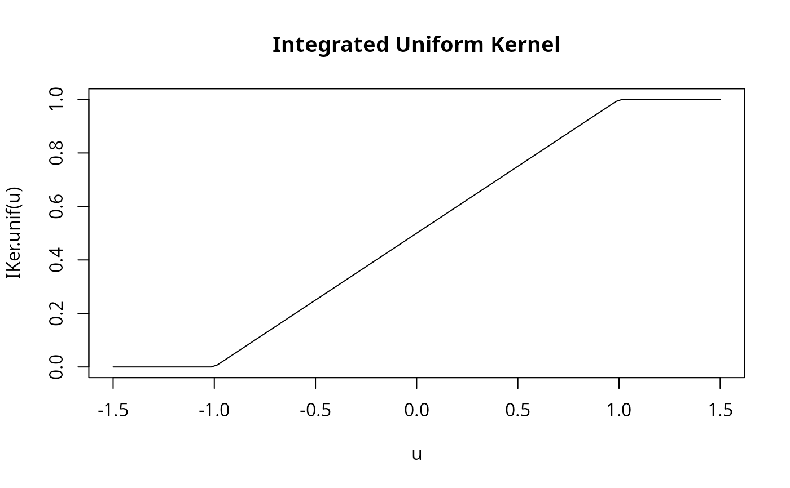

R/kernels.R
IKer.unif.Rd
Integral of Ker.unif from -1 to u.
IKer.unif(u)
Numeric vector of evaluation points.
Cumulative integral values.
u <- seq(-1.5, 1.5, length.out = 100) plot(u, IKer.unif(u), type = "l", main = "Integrated Uniform Kernel") 
